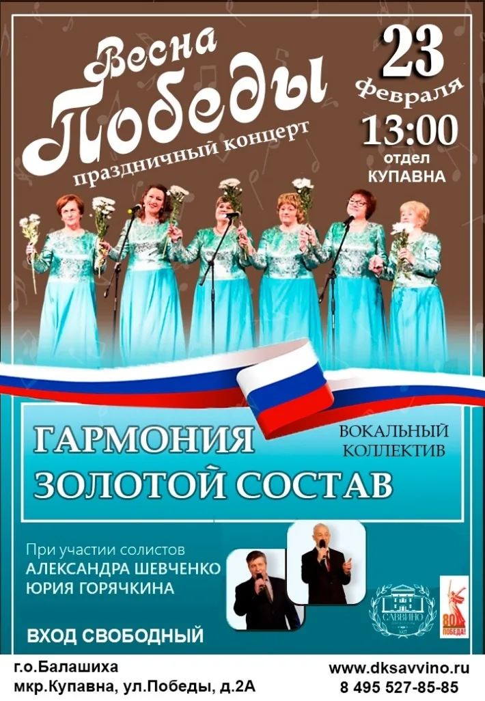
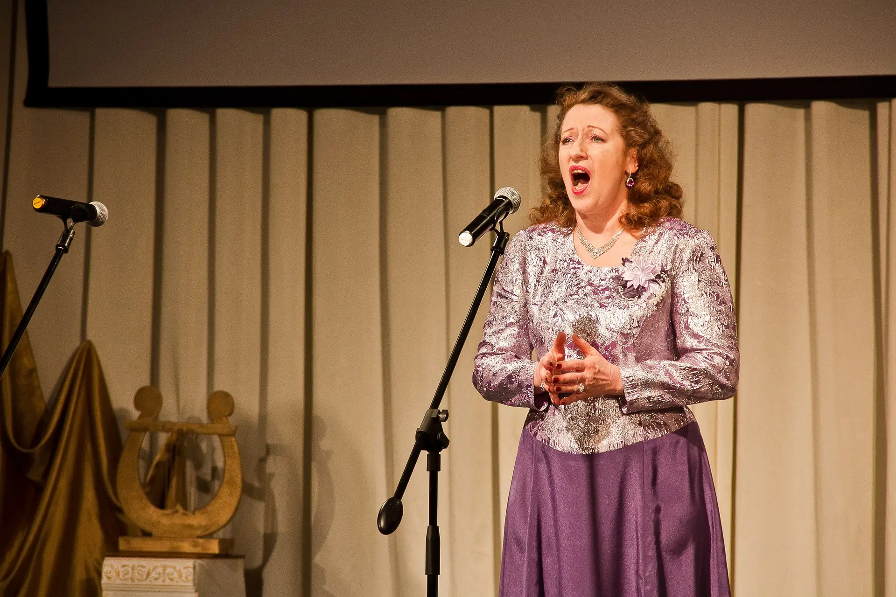
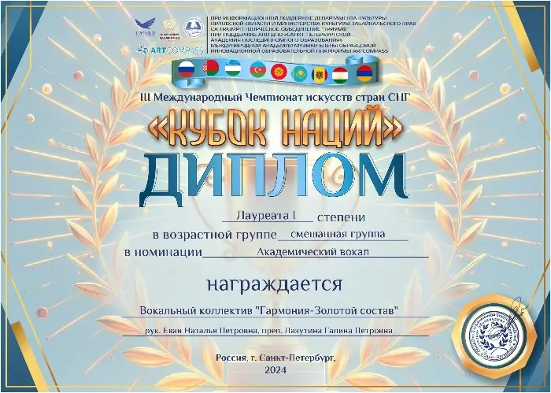
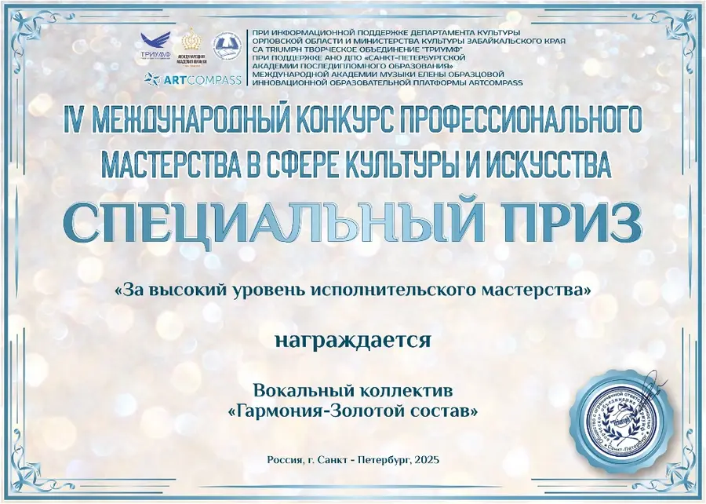
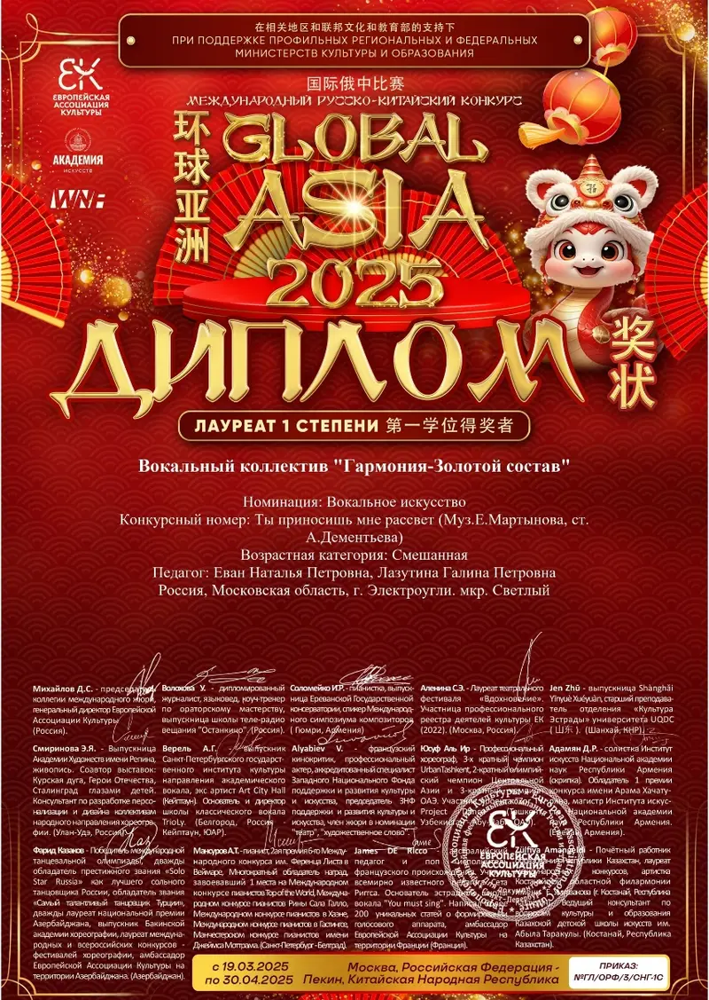
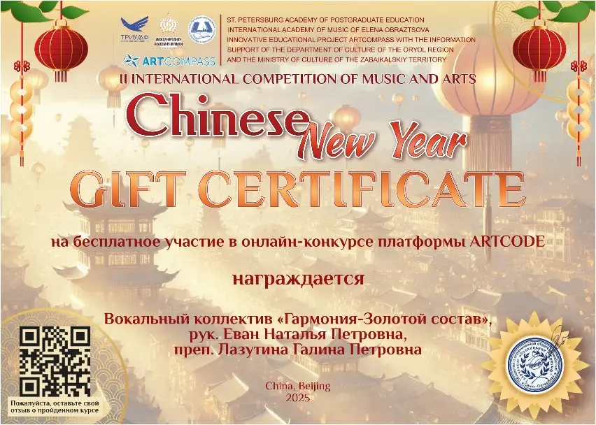
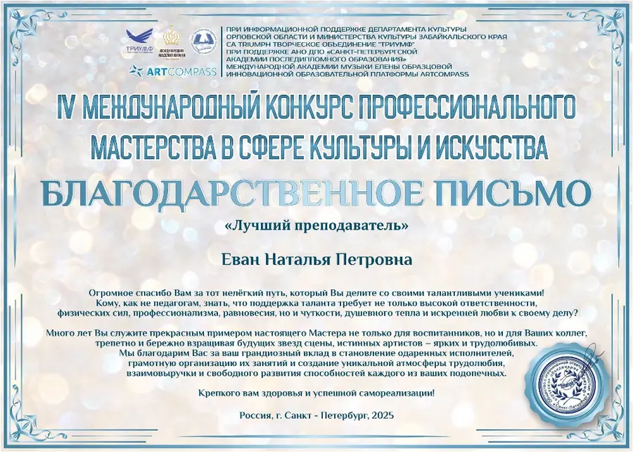

Запланировано
Концерт коллектива «Гармония»
Дом культуры, пос. Светлый, Ногинский район.
21 декабря 2026 г.
«Гармония» из Ногинска поёт с 2000 года, звание «Народный» носит с 2010. Концерты - рядом с домом, вход на многие свободный.
Напишем или позвоним, когда будет ближайший концерт. Это бесплатно.
Коллектив создан в 2000 году на базе дома культуры микрорайона Светлый в Ногинске. В 2010 году получил звание «Народный» от Министерства культуры Московской области.
Вокал - академический: это та самая школа, по которой слышно каждое слово и в которой голоса звучат вместе, а не по одному.

Лучше один раз услышать. Это записи из архива коллектива - тот самый звук, который ждёт вас в зале. Нажмите на треугольник - видео запустится прямо на странице.
«Вокальный ансамбль в академической манере встретишь не часто. Чистая интонация в пении, наблюдалась кантилена, понятны все слова. Прослушивалось многоголосие, что тоже порадовало. Приятно слушать!»
Оксана Якушевич - председатель экспертного совета VIII Международного конкурса «Открытые страницы. Золотой голос», солистка Большого театра Беларуси
Это настоящие дипломы и благодарности последних лет - не слова, а документы.





Вы - самый лучший коллектив! Побед вам еще на конкурсах!
И я поздравляю весь коллектив! Действительно одаренные искусством, талантом! Браво!
Ваши выступления всегда приносят людям радость и позитив. Успехов и новых выступлений!
Наталья, так держать! Молодцы!
Урааа! Поздравляю вас, Наталья Петровна, и весь вокальный коллектив с заслуженной победой и только с наивысшими наградами! Вы не даете в своем лице погибнуть настоящему искусству! Многие не понимают, какой это колоссальный труд - академический вокал, какая это постоянная работа над голосом, оттачивание того, чему посвятили всю свою жизнь! Если бы обычный человек, зритель, так сказать обыватель, побывал хотя бы на одной репетиции академического пения, думаю, он смог бы хотя бы немного понять масштаб такой творческой работы. Я знаю, о чем говорю! Когда училась, у нас часто девочки не выдерживали: работа с дыханием, связками, диафрагмой, сложные распевки, построение многоголосья, непростые произведения, постоянное единение, когда вы - одно целое, хотя у каждого своя партия и своя задача в коллективе, - это все и многое другое на самом деле «каторжный труд», и только вокалист, который предан и душой, и телом этому искусству, сможет это понять и продолжать нести искусство в массы!
Были на концерте? Один тёплый абзац - лучшая благодарность для певцов. Расскажите, что запомнилось, - все отзывы читает руководитель коллектива.
Самые душевные мы публикуем на этой странице - по имени или анонимно, как пожелаете.
Здесь мы пишем всё по факту: что уже отыграли и что планируем. Чтобы не пропустить ближайший концерт - оставьте контакт чуть ниже.

Дом культуры, пос. Светлый, Ногинский район.
21 декабря 2026 г.
Дом культуры Саввино. Солисты - Александр Шевченко и Юрий Горячкин.
Дом культуры, клуб, праздник района или корпоратив - расскажите, что за событие, и мы предложим программу под него и под ваш зал.
На сбор программы и репетиции обычно нужно от двух недель, поэтому лучше написать заранее.
Можно и просто позвонить: +7 (916) 654-40-47 (Наталья Петровна).
Оставьте имя и телефон - когда коллектив выйдет на сцену, мы сами напишем или позвоним. Никакой рекламы и никаких лишних сообщений: только афиша.
А ещё мы ведём группы, где афиша появляется первой: